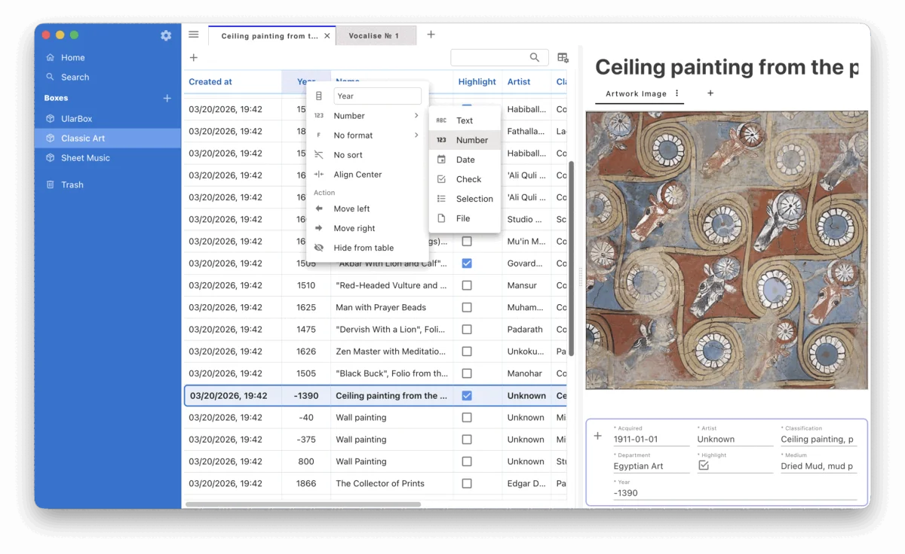
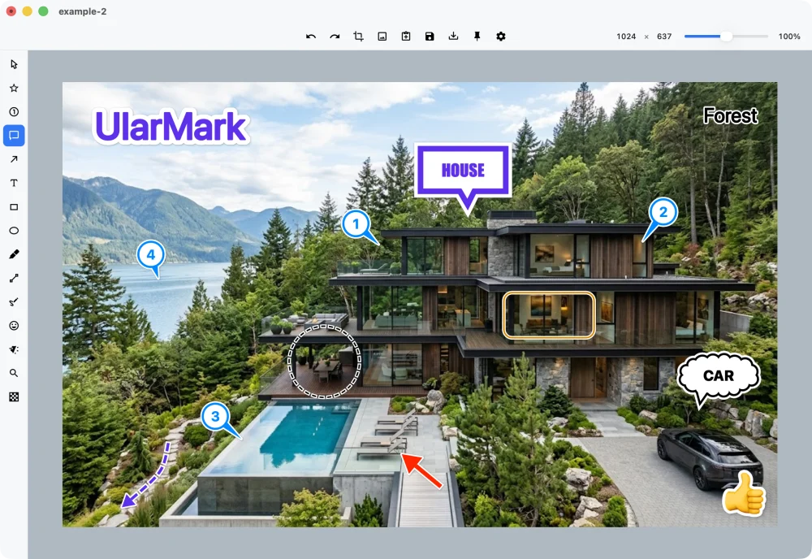

UlarBox
Organize files in tables, add your own fields, and preview documents and media in place.
Explore UlarBoxUlarMark for Mac
Add numbered steps and callouts for bug reports or guides. Save an editable UlarMark document so you can update the annotations and export a new PNG later.
Reopen the .ularmark file, move the marker or revise its label, then export a new PNG for your guide.


Organize files in tables, add your own fields, and preview documents and media in place.
Explore UlarBoxMake screenshots easier to follow with notes, numbered steps, and editable markup.
Explore UlarMarkPut a term, an example, and a common mistake on one card. Review them with spaced repetition.
Find past coding sessions and check your Git worktrees from the terminal.
Search and resume past sessions from Claude Code, Codex, and Antigravity.
ular-s7s on GitHubs7s demoSee changed files, unpushed commits, and worktrees across multiple Git repositories.
ular-git on GitHubular-git